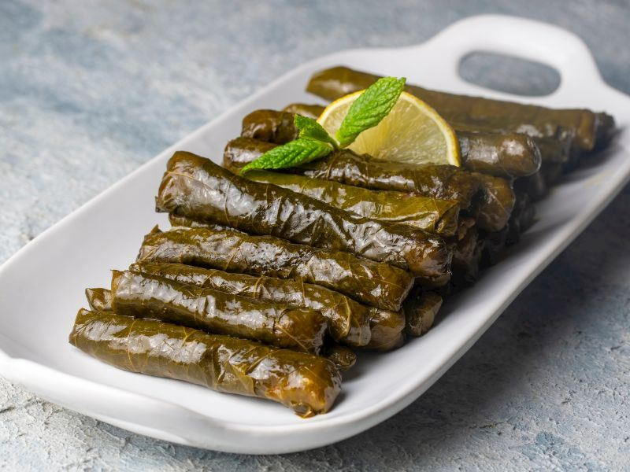

Sarma

Description
This classic Turkish dish features tender grape leaves wrapped around a fragrant rice filling cooked with olive oil, onions, pine nuts, currants, and a blend of aromatic spices. The filling is gently sautéed to enhance the flavors, then rolled into grape leaves and simmered to perfection. With fresh herbs like parsley and mint added at the end, this vegetarian favorite is light, flavorful, and perfect for serving cold or at room temperature. Traditionally enjoyed as a meze (appetizer), it's a staple in Turkish and Middle Eastern cuisine, ideal for sharing and special gatherings.
Ingredients
- 2 dry yellow onions
- 1 cup of rice
- 1 teespoon of cinnamon
- 1 teespoon of black pepper
- 1 teespoon of granulated sugar
- salt
- half a bunch of parsley
- a few springs of fresh mint
- 1 teespoon of dried mint
- Half a small coffee cup of pine nuts
- 1 large tamato
- half a cup of olive oil
Steps
- Finely chop the dry onions and sauté them in half a tea glass of olive oil.
- Once the onions are sautéed, add one grated or pureed tomato and mix.
- Add the washed and drained rice and sauté lightly.
- Add pine nuts, currants, cinnamon, dried mint, black pepper, sugar, and salt (adjust based on the saltiness of your grape leaves — if very salty, skip the salt).
- Mix everything together and remove from heat.
- Finally, add finely chopped parsley and fresh mint, and mix well.
- Wash the brined grape leaves and soak them in water to remove excess salt if needed.
- Place about one dessert spoon of filling on each grape leaf and roll them up.
- Line the bottom of the pot with leftover or damaged grape leaves (to prevent burning).
- Place the rolled grape leaves neatly in the pot.
- After all are placed, cover them with a layer of grape leaves.
- This helps trap the steam inside, making cooking easier and keeping the top layer greener.
- Drizzle with half a tea glass of olive oil.
- Add enough water to cover the grape leaves, close the lid, and cook on low heat.
- Check the water level while cooking — if it dries out, add more water.
- Let cool before serving. Enjoy!